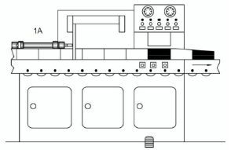

Dispositivo de alimentação direta (Comando direto de um atuador de simples ação). A figura abaixo representa um dispositivo de alimentação de peças.
O funcionamento deste dispositivo baseia-se no avanço de um atuador de simples ação que desloca as peças para dentro de um sistema, retornando em seguida à sua posição inicial para uma nova alimentação.
O avanço do atuador ocorre através do acionamento de um botão e o retorno pelo desacionamento do mesmo.
Elaborar o circuito pneumático com acionamento direto para este dispositivo e relacionar os componentes a serem utilizados.
Solução possível:
Dispositivo de abertura de caldeira (Comando direto negado de um atuador de simples ação). A figura abaixo representa um dispositivo de abertura de caldeira.
Um cilindro de simples ação tem a função de abrir e fechar a porta de uma caldeira e deverá ser controlado por uma válvula direcional com retorno por mola, sendo que, no acionamento promove-se o recuo, no desacionamento, o avanço.
Elaborar o circuito pneumático com acionamento direto para este dispositivo e relacionar os componentes a serem utilizados.
Solução possível:
Dispostivo de alimentação indireto: A figura abaixo representa um dispositivo de alimentação de peças.
O funcionamento deste dispositivo baseia-se no avanço de um atuador de simples ação que desloca as peças para dentro de um sistema, retornando em seguida à sua posição inicial para uma nova alimentação. O avanço do atuador ocorre através do acionamento de um botão e o retorno pelo desacionamento do mesmo.
Elaborar o circuito pneumático com acionamento indireto para este dispositivo e relacionar os componentes a serem utilizados.
Solução possível:
Dobrador de chapas: A figura abaixo representa um dispositivo de dobrar de chapas.
O funcionamento do dobrador de chapas baseia-se no avanço de um atuador de dupla ação que dobra as peças para baixo, retornando em seguida à sua posição inicial para realizar uma nova dobra.
O avanço do atuador ocorre através do acionamento de um botão e o retorno pelo acionamento de outro botão.
Elaborar o circuito pneumático para este dispositivo e relacionar os componentes a serem utilizados.
Solução possível:
Dispositivo de Controle de Qualidade A figura abaixo representa um dispositivo de controle de qualidade visual.
Num processo de fabricação de peças, o controle de qualidade é realizado visualmente, por um operador.
As peças aprovadas são destinadas à esteira 1 e as peças reprovadas serão retrabalhadas e para isso serão destinadas à esteira 2. Há na máquina um segundo pedal para caso o operador seja destro.
Ao detectar uma peça para retrabalho, o operador irá acionar um pedal para que o atuador de simples ação avance e desloque a peça à esteira 2. O retorno do atuador ocorre automaticamente.
Solução possível:
Dispositivo de cortador de chapas pneumático: A figura abaixo representa um dispositivo para cortar chapas.

O avanço do atuador de dupla ação pode ser feito de dois pontos diferentes, e após o deslocamento da chapa ela será cortada. Ao desacionar um dos botões, o atuador irá retornar rapidamente.
Elaborar o circuito pneumático e relacionar os componentes a serem utilizados.
Solução possível:
Silo Pneumático: A figura abaixo representa um Silo Pneumático.
Um atuador de dupla ação é utilizado para abrir o silo. Após acionar um botão, o atuador deverá retornar.
O avanço deverá ocorrer somente depois de um tempo pré-ajustado. O avanço e retorno do atuador deverá ocorrer lentamente.
Elaborar o circuito pneumático e relacionar os componentes a serem utilizados.
Solução possível:
Cortador de chapas com avanço e recuo: A figura abaixo representa um dispositivo para cortar chapas.
O avanço do atuador de dupla ação pode ser feito de dois pontos diferentes, e após o deslocamento da chapa ela será cortada. Ao desacionar um dos botões, o atuador irá retornar rapidamente.
Elaborar o circuito pneumático e relacionar os componentes a serem utilizados.
Solução possível:
Furadeira automática: Guiar-se pela figura abaixo:
Você foi contratado com Auxiliar Técnico em uma Empresa de Fabricação de Painéis Pneumáticos para utilização em uma Máquina que prende e fura peças, onde o funcionamento é definido através de um circuito pneumático com sensor.
Na atuação de seu trabalho lhe foi passado pelo gerente à proposta de desenvolver junto com seu colega de setor: o Croqui, o Diagrama Pneumático e a Descrição de Funcionamento e a Lista de Peças do conjunto a ser montada pela equipe técnica segundo as especificações descritas em manual de fabricante.
Na maquina onde será montado o painel o processo de usinagem para furação de peças usa-se um dispositivo composto por duas fases: uma de fixação e outra de furação propriamente dita. A fase de fixação é realizada por atuador de simples ação e a furação por atuador pneumático de dupla ação.
A peça é colocada manualmente na posição de trabalho e o acionamento de um botão inicia o processo. Para evitar danos à peça, a furação (avanço) deve ser feito lentamente e o retorno em velocidade rápida.
Elaborar o circuito pneumático, simular seu funcionamento, montar e testar a solução proposta.
Solução possível: A fase de Fixação é realizada ação direta de valvula 3/2 acionada por botão em atuador de ação simples e a furação é realizada por atuador de dupla ação acionado por sensor posicionado a frente do atuador que prende peças. A peça é colocada manualmente na posição de trabalho e o acionamento de um botão inicia o processo. Para evitar danos à peça, a furação (avanço e retorno ) deve ser feito lentamente. Baseado no diagrama trajeto-Passo.
Prensa pneumática: A figura abaixo representa o dispositivo de alimentação e prensa peças.
O funcionamento deste dispositivo baseia-se no avanço e recuo, automático, de dois atuadores de dupla ação sincronizados. O atuador A avança e desloca uma peça da posição X para a posição Y; o atuador B avança e prensa a peça. A máquina funciona de maneira contínua, liga através do acionamento de um botão e desliga pelo desacionamento do mesmo botão.
Elaborar o circuito pneumático para este dispositivo. Uma solução para o dispositivo de Alimentação de peças está abaixo.
Solução possível:
Dispositivo de transferência de peças: A figura abaixo representa um dispositivo de transferência de peças da estação I para a estação II.
Através do Diagrama Trajeto-Passo, elaborar o circuito pneumático para este dispositivo e relacionar os componentes a serem utilizados.
Solução possível:
Seguem Exercícios Propostos:
Fixação de peças: Por intermédio de uma válvula pedal, deve-se fixar peças em uma morsa. A peça deverá permanecer fixa ao ser liberado o acionamento. Esboço de Disposição:
Solução: Acionado-se a válvula direcional 3/2 vias, a haste do cilindro avança. Ao liberar-se o pedal 1.1 a haste do cilindro permanece avançada por causa da trava. O retorno efetua-se pelo destravamento do pedal.
Distribuição de caixas: O deslocamento de uma esteira de rolos deve ser efetuado mediante o acionamento de dois botões, de forma tal que, na liberação destes deve manter a posição correspondente. Esboço de Disposição:
Solução: Acionando-se a válvula 1.2, a válvula 1.1 muda de posição pelo comando no piloto Z. A haste do cilindro de dupla ação avança deslocando a esteira de rolos para a segunda posição. Esta posição será mantida ate que seja emitido um sinal seguinte por meio da válvula 1.3 que, pilotando em Y, a válvula 1.1 leva esta ultima a comutação, provocando o retorno da haste do cilindro.
Acionamento de um registro de dosagem: A dosagem de um liquido deve ser realizada mediante um válvula de acionamento manual. Deve existir a possibilidade de parar a válvula dosificadora em qualquer posição. Esboço de Disposição:
Solução: Mediante a válvula direcional de 4/3 vias a haste do cilindro pode avançar e recuar. Com a posição central da válvula (fechada), a válvula dosificadora pode parar em qualquer posição de seu curso.
Acionamento de uma caçamba de fundição: Mediante um botão, a descida da colher de fundição deve realizar-se lentamente. O comando para o retorno da colher deve ser produzido de forma automática, ao fim de seu curso. Esboço de Disposição:
Solução: Todas a válvulas são alimentadas da unidade de conservação. Ao acionar-se a válvula 1.2, a colher baixa lentamente. Ao alcançar a posição final dianteira, o fim de curso 1.3 inverte a válvula 1.1. A colher sobe lentamente.
Rebitagem de chapas: Ao acionar-se dois botões simultaneamente, um cilindro tandem deverá rebitar duas chapas sendo comandado por uma válvula de segurança bimanual. Esboço de Disposição:
Solução: São acionados dois botões 1.2 e 1.4. Se ambos os sinais estão presentes em um determinado tempo inferior a 0,5s o bloco de segurança bimanual deixa passar o sinal. A válvula 1.1 muda de posição e a haste do cilindro avança rebitando as placas.
Distribuição de esferas: As esferas contidas em um alimentador vertical devem ser distribuídas alternadamente nos condutores I e II. O sinal para o retorno do cilindro 1.0 deve ser emitido por um botão manual ou um pedal. O comando de avanço deve ser produzido por um fim de curso com acionamento por rolete. Esboço de Disposição:
Solução: A válvula 1.1 muda a posição, quando 1.3 (botão) ou 1.5 (pedal) for acionado, através da válvula alternadora A haste do cilindro 1.0 recua e leva uma esfera para o condutor II. Chegando no final de curso traseiro, é acionada a válvula 1.2 que muda a posição 1.1 e a haste do cilindro avança levando outra esfera para o condutor I.
Dispositivo para a colagem de peças plásticas: O sinal de partida é emitido mediante um botão.O cilindro após avançar sua posição final, deve prensar as peças durante 20s. Após esse tempo a hastedo cilindro deve voltar a sua posição final traseira. Esse retorno deve ser produzido de qualquer maneira,mesmo que o botão ainda esteja acionado. Um novo ciclo somente poderá ser realizado após a liberaçãodo botão e retorno da haste do cilindro Esboço de Disposição:
Solução: A válvula 1.1 muda a posição, quando 1.3 (botão) ou 1.5 (pedal) for acionado, através da válvula alternadora A haste do cilindro 1.0 recua e leva uma esfera para o condutor II. Chegando no final de curso traseiro, é acionada a válvula 1.2 que muda a posição 1.1 e a haste do cilindro avança levando outra esfera para o condutor I.
Fim (01/04/2022)